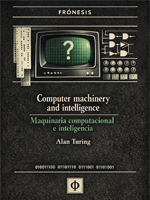

Computer Machinery and Intelligence
Texto clave en la comprensión del razonamiento computacional.
Ver publicaciónEdiciones cuidadas de textos fundamentales y ensayos breves. Obras de uso libre, preparadas para la lectura, el estudio y la circulación.
Texto clave en la comprensión del razonamiento computacional.
Ver publicaciónTraducción revisada, con introducción editorial y criterios de edición explícitos.
Texto breve, pensado para circular libremente y ser citado sin restricciones.
Edición tipográfica cuidada, compatible con lectura digital e impresión.